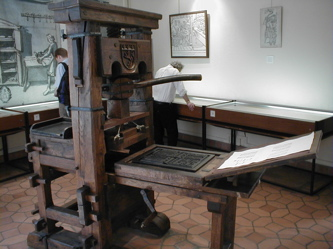
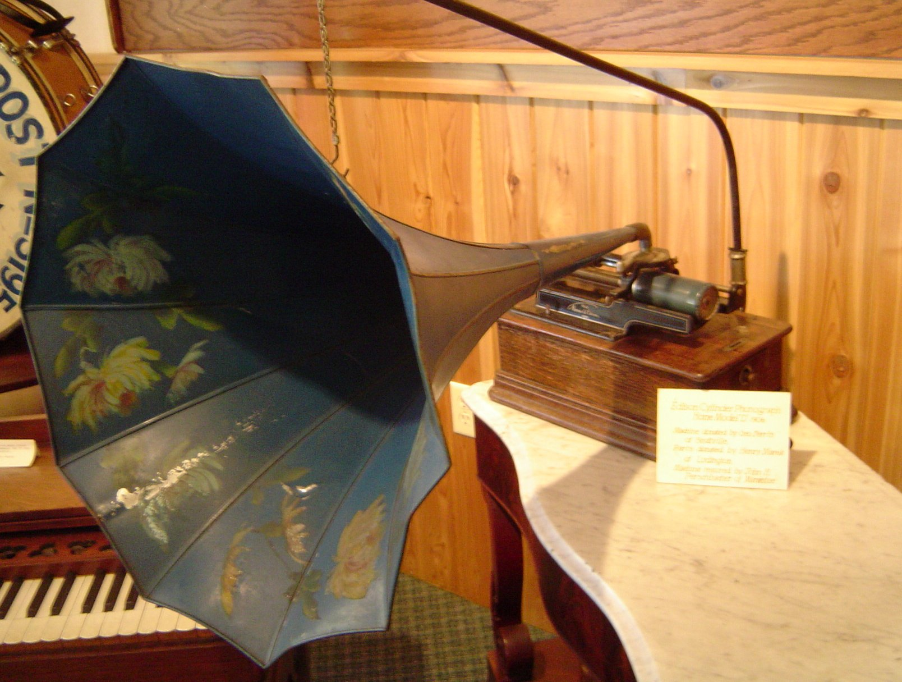
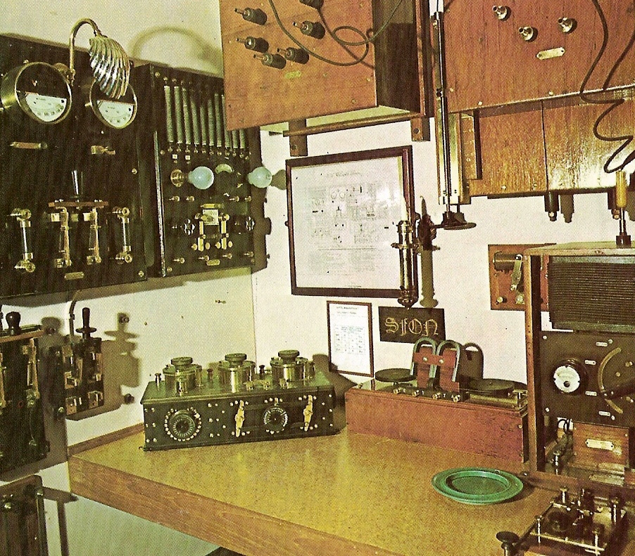

Before Gutenberg invented the printing press, communicating with the masses was something that only the Church or the very wealthy could do. Information was localized and it stayed localized, it wasn't copied or distributed often and there was a massive divide between the haves and have nots. Then, Martin Luther used the technology to start the Protestant Reformation....
Thomas Edison invented the Phonograph, instigating Mass Medium #2: Recordings.  Edison's invention allowed people to share information first hand, over time and across great distances. Recorded music influenced society in a great many ways. Jazz, for example, opened the doors for newly freed slaves to become entertainers and in the 60's Rock and Roll continued the "freeing" of people of color as well as women from traditional life styles.
Cinema expanded on recordings allowing us to both SEE and hear other people's experiences. For more detailed discussion points on cinema, see A Brief History of Storytelling.
Radio When Marconi figured out how to transmit live messages using Morse code, he changed the way mankind related to information. It was the first time we could experience what was going on ?over there? instantaneously. The reason that the Titanic sinking had such an impact is partly because live transmits were being sent from the scene. People were able to experience the drama as it happened and it's been said that the only reason there were ANY survivors from the Titanic was because of Marconi's invention.
Then came Television, initially an extension of radio broadcasts, early TV was probably kind of boring. But now, we all know that TV has the power to inform us instantaneously. And to show us that in "reality" everyone has perfect hair and teeth.
After TV nothing happened for a while until the US Military started experimenting with distributed computer networks. That didn't actually help out the general public much until 1989 when Tim Berner's Lee developed the World Wide Web.